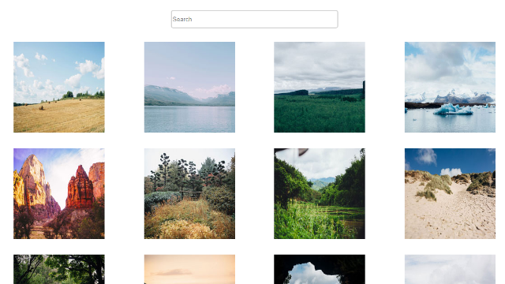

Back to Home
Interactive Photo Gallery
Project Summary
This interactive photo gallery has a grid of photos which can be filtered by its caption content using the search bar at the top of the page. When an image is clicked, the image is expanded. Below the expanded image is a caption of it and a close button to navigate back to the grid.
Development
Details
This project displays images in a grid that can be filtered using the search bar. The search script hides all elements whose caption does not contain the typed string. The lightbox display of each image is controlled via baguetteBox.js and was not written by me. However, the layout and search script was. The layout uses a grid to display the images and is made responsive with it without the need for media queries.
Challenges
The part that was the most complex was definitely the search function. Although, the function behind it is rather straightforward. The search bar has a listener for whenever something is typed into it. A list of the images is created and their captions are looped through and checked with the value of the search field. If it's included in their caption, they are made visible if they aren't already. Otherwise, they are hidden from view.